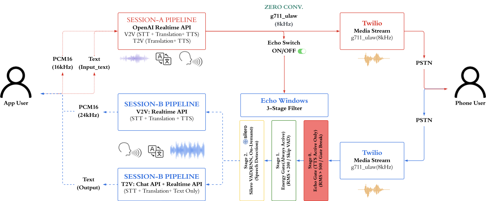
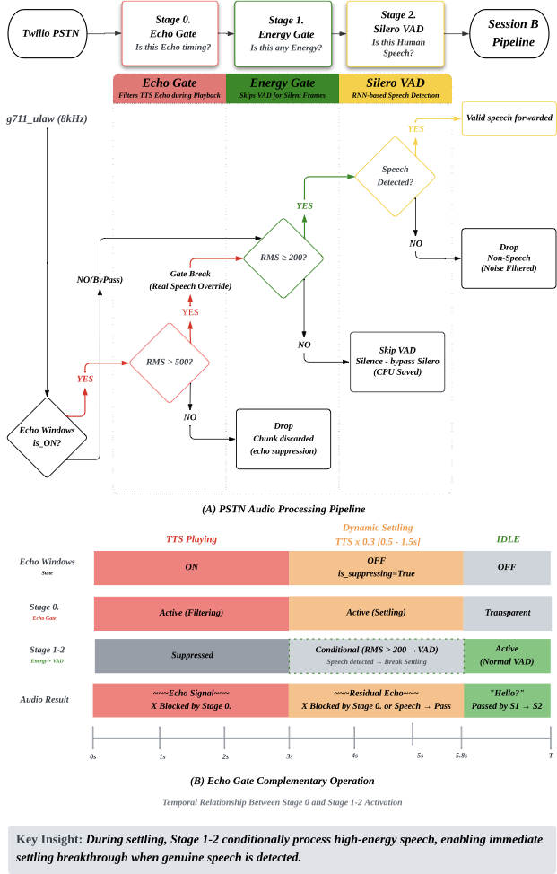
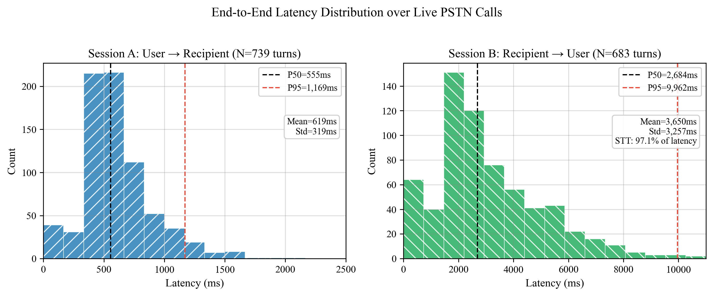
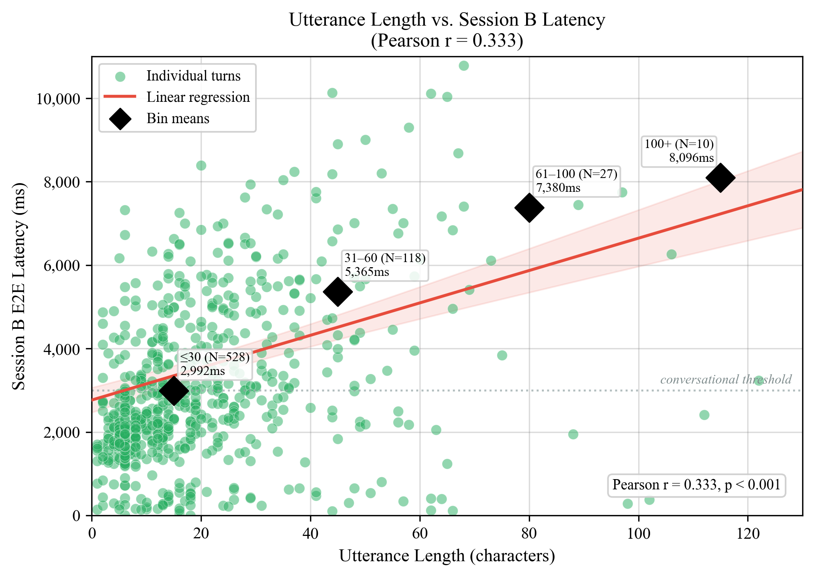
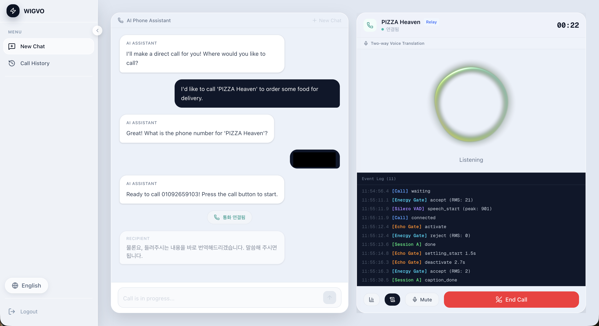

WIGVO - PSTN 기반 AI 실시간 양방향 전화 통역 중계 플랫폼
WIGTN Crew 독립 연구로 진행된 프로젝트입니다. 148건의 실제 통화 데이터로 검증되었습니다.
"Real-Time Bidirectional Speech Translation over Legacy PSTN Calls via Dual-Session Echo Gating"
Overview
PSTN 기반 AI 실시간 양방향 전화 통역 중계 플랫폼
한 스타트업 대표에게 들은 이야기에서 시작된 프로젝트입니다. 대구에서 근무하던 외국인 직원이 서울로 전근하면서 부동산을 구해야 했는데, 언어가 통하지 않아 전화 한 통 하기가 어려웠다고 합니다. 번역 앱은 있지만 전화 통화에서는 한계가 있었고, 이런 경험을 겪는 사람이 많을 거라 생각해 그 벽을 허물고자 시작했습니다.
고음역 대역폭(16~24kHz)에서만 가능하다고 여겨지던 실시간 양방향 음성 번역을 PSTN 저음역 대역폭(8kHz G.711 μ-law)에서 구현하기 위해, 에코 제거 루프와 VAD를 독립 아키텍처로 설계하여 프로덕션 배포했습니다.
주요 성과
- PSTN 전화망에서 소프트웨어만으로 실시간 양방향 음성 번역을 구현한 최초의 접근 (HW AEC·통신사 인프라 불필요)
- 통화 비용 — $0.18/min (아키텍처 최적화로 33% 절감)
- 에코 루프 발생 — 0 / 148건 (프로토타입 80% → 프로덕션 0%)
- VAD 레이턴시 — 15~72초 → 480ms
- Whisper 할루시네이션 유입률 — 0.3% 미만, 통화당 평균 0.7건 차단
- Dual-Session Echo Gating 아키텍처 — 에코 감지·차단을 소프트웨어로 자체 설계
- 3-Stage 오디오 필터 파이프라인 — Echo Gate → Energy Gate → Silero VAD 직접 설계·구현
- ACL 2026 System Demonstrations — Accepted, 제 1저자
데모 & 링크
- 데모 비디오: YouTube
- 프로덕션: wigvo-web (Cloud Run)
- GitHub: wigtn/wigvo-v2
누구를 위한 시스템인가
- 재한 외국인 — 한국어로 전화할 수 없는 220만 거주 외국인 (2024)
- 해외 체류 한국인 — 현지 언어로 전화할 수 없는 280만 해외 한국인
- 청각·언어 장애인 — 음성 통화가 불가능한 39만 등록 장애인
- 콜포비아 — 전화 자체를 기피하는 MZ세대 (~40%)
기술적 문제 — 왜 PSTN이 어려운가
오디오 품질 차이
PCM16(16~24kHz) 환경은 광대역 오디오와 클라이언트사이드 AEC를 전제로 합니다. PSTN은 G.711 μ-law 8kHz 협대역 코덱, 80~600ms 가변 지연, 코덱 압축 노이즈가 상시 존재합니다.
에코 루프
AI가 번역한 TTS 음성이 PSTN을 통해 80~600ms 후 되돌아와 다시 STT → 번역 → TTS 파이프라인을 타는 무한 루프입니다. 초기 테스트 10건 중 8건에서 발생했습니다. 고음역 앱 환경의 클라이언트 AEC가 없는 PSTN에서는 소프트웨어로 직접 해결해야 합니다.
VAD 실패
OpenAI Server VAD는 깨끗한 광대역 오디오를 전제로 합니다. PSTN 배경 노이즈(RMS 50~200)는 Server VAD 기준으로 "발화 중"으로 인식되어, speech_stopped가 15~72초 뒤에야 발화되거나 아예 발화되지 않습니다.
기존 시스템과의 비교
| 시스템 | PSTN | 양방향 | S2S | 에코 처리 | 접근성 |
|---|---|---|---|---|---|
| SeamlessM4T | O | O | N/A | ||
| Moshi / Hibiki | O | N/A | |||
| Google Duplex | O | N/D | |||
| Samsung Galaxy AI | O | O | O | HW AEC | |
| SKT A.dot | O | O | O | 통신사 인프라 | |
| WIGVO | O | O | O | 소프트웨어 | O |
Architecture — Dual-Session Echo Gating
브라우저 클라이언트가 WebSocket으로 릴레이 서버에 연결하면, 서버가 2개의 독립된 Realtime LLM 세션과 Twilio 전화 게이트웨이를 관리합니다. AudioRouter가 Strategy 패턴으로 3개 파이프라인(V2V, T2V, FullAgent) 중 하나에 이벤트를 위임합니다.

3계층 구조
- Layer 1 — Transport: Twilio Media Streams(PSTN ↔ G.711 μ-law 8kHz) + Browser WebSocket(PCM 16kHz)
- Layer 2 — Pipeline: AudioRouter가 Strategy 패턴으로 V2V / T2V / Agent 모드에 이벤트를 위임
- Layer 3 — Sessions: Session A(브라우저→전화) + Session B(전화→브라우저)가 독립 시스템 프롬프트와 6턴 슬라이딩 컨텍스트 유지
STT-번역 분리
Realtime API에 번역까지 맡기면 원문에 없는 내용을 추가하는 할루시네이션이 발생합니다. STT는 Realtime API 내 Whisper-1을 유지하고, 번역만 GPT-4o-mini Chat API(temperature=0)로 분리했습니다. context_prune_keep=0으로 Realtime 자체 번역을 완전 차단했습니다.
Stage 1 — Echo Gate (7단계 진화)
TTS 음성이 PSTN을 통해 되돌아오는 에코 루프를 소프트웨어로 차단합니다.

결정적 돌파구 — Drop vs Replace
오디오를 "차단(drop)"하면 Server VAD가 "스트림 중단"으로 해석하여 멈춥니다. μ-law 무음(0xFF)으로 "대체(replace)"하면 스트림 연속성은 유지되면서 VAD가 침묵으로 정상 인식합니다. 이 "Drop vs Replace" 패러다임이 Echo Gate와 VAD 양쪽에서 동일하게 적용되는 핵심 원리입니다.
최종 Echo Gate 3단 구조
- 에코 윈도우 — TTS 재생 중 PSTN 오디오를 μ-law silence로 대체 + TTS 종료 후 0.5초 지터 마진
- Dynamic Settling — TTS 길이 × 0.3 (0.5s~1.5s 클램프)로 AGC 회복 노이즈 억제, RMS ≥ 500은 실제 발화로 통과
- 일반 구간 — RMS ≥ 150 에너지 임계치
7단계 진화 과정
- Audio Fingerprint(Pearson 상관계수) — G.711 μ-law 비선형 양자화로 상관관계 붕괴, 전혀 동작 안함
- 고정 Echo Gate(2.5초) — 에코 해결하나 대화 흐름 단절
- Dynamic Cooldown — TTS 길이 비례 차단, 차단 해제 직후 AGC 노이즈 스파이크 문제
- Silence Injection + RMS + Dynamic Settling + Silero — 최종 채택
성과
에코 루프 발생률 초기 8/10건 → 프로덕션 0/148건
Stage 2 — PSTN VAD 독립 아키텍처
문제
OpenAI Server VAD는 블랙박스라 에코 구간에서 프레임 단위 제어가 불가능합니다. RMS 임계치를 150→80→30→20까지 시도했으나 PSTN에서 안정적인 단일 임계치는 존재하지 않았습니다. Local Silero VAD로 전환하여 PSTN 특성에 맞는 독립 아키텍처를 구성했습니다.
2단 독립 필터
- Stage 1 — RMS Energy Gate: 에코 윈도우 내 RMS ≥ 500, Settling RMS ≥ 200, 일반 RMS ≥ 150
- Stage 2 — Silero VAD: 에너지 게이트 통과 프레임을 신경망 판단. 8kHz→16kHz zero-order hold 업샘플링
- 비대칭 히스테리시스: onset 160ms(5프레임) / offset 800ms(25프레임)
- 최소 발화 250ms, 최소 피크 RMS 300으로 약한 신호를 노이즈로 거부
성과
speech_stopped 레이턴시 15~72초 → 480ms
Stage 3 — Whisper 할루시네이션 3-Stage 필터
PSTN 노이즈가 Whisper-1에 입력되면 학습 데이터(유튜브, 방송)에서 학습한 "그럴듯한" 텍스트를 생성합니다. "MBC 뉴스 이덕영입니다", "Thanks for watching" 같은 방송체 패턴이 번역 파이프라인으로 유입되어 수신자 전화기로 나가는 사고가 프로덕션에서 실제로 발생했습니다.
3-Stage 파이프라인
- Pre-STT (Stage 0) — Echo Gate + Silence Injection으로 오염된 오디오 자체를 Whisper에 넣지 않음
- Post-STT (Stage 1) — 한국어 29패턴 + 영어 22패턴, 총 51개 방송체 블록리스트 + 최소 길이·침묵 timeout·반복 구절·신뢰도 조합 4-layer 텍스트 필터
- Post-Translation (Stage 2) — 3-level Guardrail: L1(통과, 0ms) · L2(TTS 즉시+백그라운드 교정, 0ms) · L3(차단+GPT-4o-mini 교정, ~800ms)
성과
할루시네이션 유입률 0.3% 미만, 통화당 평균 0.7건 차단 (148건 기준). 95%+ 케이스가 L1 처리로 추가 레이턴시 없음.
Strategy 패턴 — 3개 통신 파이프라인
초기 God Object(AudioRouter)를 Strategy 패턴으로 분리하여 얇은 위임자 + 3개 독립 파이프라인으로 리팩토링했습니다 (73% 코드 감소).
파이프라인 구조
- VoiceToVoice (V2V) — 양방향 음성 번역. Echo Gate + Silence Injection + 3단계 인터럽트 우선순위
- TextToVoice (T2V) — 청각·언어 장애인용. 텍스트 입력 → AI 번역 음성 전달
- FullAgent — 콜포비아용 AI 대리 통화. TextToVoice 상속 + Function Calling
- EchoGateManager — 공통 에코 방지 로직, 파이프라인 간 공유
- ChatTranslator — T2V/Agent Session B 번역, GPT-4o-mini
Key Metrics — 148건 프로덕션 통화
레이턴시
- Session A P50: 555ms / P95: 1,169ms
- Session B P50: 2,868ms (발화 길이와 상관 Pearson r=0.400)
- 첫 메시지 P50: 1,215ms (cold start)
에코 및 안전성
- 에코 루프 발생: 0 / 148건 (프로토타입 80% → 0%)
- 통화당 에코 게이트 활성화: 평균 7.0회
- 통화당 VAD 오탐: 평균 1.8건
- 통화당 할루시네이션 차단: 평균 0.7건
- Guardrail L2 148회 (정상 교정) / L3 0회
비용
- V2V: $0.30/min · T2V: $0.29/min
- 아키텍처 최적화 후: $0.18/min (33% 절감)
- 모드별 분포: T2V 116건(68.6%) · V2V 52건(30.8%) · Agent 1건(0.6%)
Latency Distribution

Figure 3: E2E 레이턴시 분포. Session A(N=814턴)와 Session B(N=744턴) 라이브 PSTN 통화 실측.
Figure 4: 발화 길이 vs Session B E2E 레이턴시. Pearson r=0.400 (p<0.001).Demo

세션 진행: (1) 시나리오 선택 → (2) AI 에이전트와 대화하여 용건·전화번호 전달 → (3) PSTN 통화 개시 + 양방향 번역 → (4) 실시간 자막 표시. 통화 중 모드 전환(V2V ↔ T2V ↔ FullAgent)이 가능합니다.
Ablation Study
Echo Gate 설계 비교
| 방식 | 에코 루프 | 대화 지연 | 채택 |
|---|---|---|---|
| Audio Fingerprint (Pearson) | 해결 불가 | — | |
| 고정 Echo Gate (2.5초) | 해결 | 단절 | |
| Dynamic Cooldown | 해결 | 개선 | |
| Silence Injection + RMS + Dynamic Settling + Silero | 해결 | 최소화 | O |
Finding
PSTN 환경에서 에코 감지는 신호 상관관계 방식이 동작하지 않습니다. 에코 구간을 직접 제어하면서 무음 프레임으로 대체하는 방식만이 안정적입니다. Realtime API의 생성 특성은 STT에는 적합하지만 번역에는 부적합하며, temperature=0 Chat API 분리가 정확도와 안정성을 동시에 개선합니다.
Tech Stack
AI & Audio
- STT: OpenAI Realtime API (Whisper-1)
- 번역: GPT-4o-mini Chat API (temperature=0)
- VAD: Silero VAD (ONNX) + RMS Energy Gate
- 전화: Twilio Media Streams (PSTN G.711 μ-law 8kHz)
Backend & Frontend
- Backend: Python 3.12, FastAPI, uvicorn, asyncio
- Frontend: Next.js 16, React 19, Zustand, shadcn/ui
- Mobile: React Native (Expo SDK 54)
- DB: Supabase (PostgreSQL + Auth + RLS)
Infrastructure
- Infra: Google Cloud Run, Cloud Build, Secret Manager
- Build: Docker, Kaniko
- 평가: COMET, BLEU, chrF
- 테스트: pytest (434개)